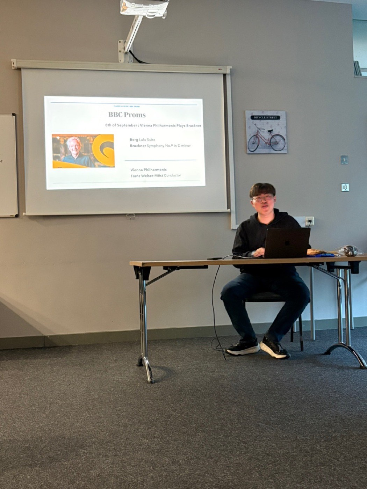

01Learning
Getting to Know Classical Music
We give talks that explain classical music, with live playing. They are for anyone curious to hear more.
On requestWrite to us. We will plan a talk with your group.
- For
- Anyone curious about classical music
- Where
- Dublin
- When
- On request
- What you need
- No knowledge of music
01How it works
Three stages, from first listening to your own taste.
-
Getting Closer
What classical music is, by period and by instrument, with recordings and live playing.
-
Together
Orchestras and performers, including Ireland’s own. How to book a ticket and choose a seat.
-
My Taste
Finding what you like, for example by hearing one piece played by five pianists.
02What to expect
Before your first talk.
- Do I need to know anything first?
- No. We start from ‘what is classical music?’ and explain every piece we play.
- How many people come?
- Six to fourteen people came to each talk we counted. The chart below shows those counts.
- Can our group ask for a talk?
- Yes. That is how talks are arranged now.
03In the room
Where it happens.

04On the record
Talks so far.
Every talk on the record, with its date, topic and place.
Earlier: 11 more
- 28 Jan 2024 Getting CloserSandyford, Dublin 18the first talk6 people
- 25 Feb 2024 Together (1)Our Lady of Dolours Church, Dolphin’s Barn6 people
- 23 Mar 2024 Together (2)Our Lady of Dolours Church8 people
- 14 Apr 2024 My Taste (1)Our Lady of Dolours Church7 people
- 27 Apr 2024 My Taste (2)Our Lady of Dolours Church7 people
- 22 Jun 2024 Summer FestivalsOur Lady of Dolours Church10 people
- 8 Nov 2024 Getting Closer + Together (1)TU Dublin, Grangegormanthe series moves to TU Dublin12 people
- 15 Nov 2024 Getting Closer + Together (2)TU Dublin12 people
- 21 Feb 2025 Getting Closer + Together (1)TU Dublin10 people
- 7 Mar 2025 Getting Closer + Together (2)TU Dublin10 people
- 11 Apr 2025 My TasteTU Dublinthe largest attendance to date14 people
- 21 Jul 2025 BBC PromsCarmelite Community Centre, Dublin13 people
- 26 Sep 2025 Getting Closer + Together (1)TU Dublin11 people
- 17 Oct 2025 Getting Closer + Together (2)TU Dublin11 people
- 5 Dec 2025 Together (1): a concert, attended togetherNational Concert Hall, Dublinthe fifteenth session, at a concert6 people
- 23 Jan 2026 My TasteEast Quad, TU Dublin Grangegormanmore than five people
- Feb 2026 My Taste (2)East Quad, TU Dublin Grangegormanmore than five people
05Take part
Ask for a talk.
Write even if you are on your own.
One line is enough. If it helps, tell us:
- Your name
- Your group or organisation (if any)
- Where you could meet
- Roughly how many people
- Dates or times that suit
Or write to sby05034@gmail.com +353 83 078 0635